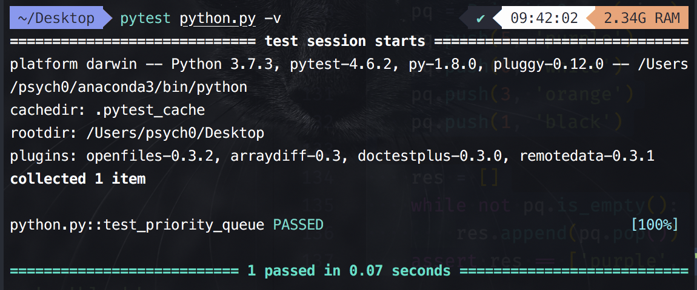

优先级队列(Priority Queue) 就是入队的时候可以给一个优先级，通常是个数字或者时间戳等，当出队的时候按照给定的优先级大小出队。
优先级队列可以用堆来实现。
优先级队列代码实现：
# 这部分直接将前面的 Array 和最大堆实现的代码 copy 过来 # 堆 # 以最大堆为例 # 这部分直接将前面的 Array 实现的代码 copy 过来 # 用 list 实现 Array class Array(object): def __init__(self, size = 32): self._size = size self._items = [None] * size # 注意 [None] 是一个 list def __getitem__(self, index): return self._items[index] def __setitem__(self, index, value): self._items[index] = value def __len__(self): return self._size def clear(self, value=None): for i in range(len(self._items)): self._items[i] = value def __iter__(self): for item in self._items: yield item ##################################################### # 堆实现 ##################################################### # 以最大堆为例 class MaxHeap(object): """ Heaps: 完全二叉树，最大堆的非叶子节点的值都比孩子大，最小堆的非叶子结点的值都比孩子小 Heap包含两个属性，order property 和 shape property(a complete binary tree)，在插入 一个新节点的时候，始终要保持这两个属性 插入操作：保持堆属性和完全二叉树属性, sift-up 操作维持堆属性 extract操作：只获取根节点数据，并把树最底层最右节点copy到根节点后，sift-down操作维持堆属性 用数组实现heap，从根节点开始，从上往下从左到右给每个节点编号，则根据完全二叉树的 性质，给定一个节点i， 其父亲和孩子节点的编号分别是: parent = (i-1) // 2 left = 2 * i + 1 rgiht = 2 * i + 2 使用数组实现堆一方面效率更高，节省树节点的内存占用，一方面还可以避免复杂的指针操作，减少 调试难度。 """ def __init__(self, maxsize=None): self.maxsize = maxsize self._elements = Array(maxsize) self._count = 0 def __len__(self): return self._count # 添加元素函数 def add(self, value): if self._count >= self.maxsize: raise Exception('full') self._elements[self._count] = value # 将要添加的值放在最后一个空位置上（也就是 _count） self._count += 1 self._siftup(self._count-1) # 调用 _siftup 函数来维持堆的特性；传入的参数是位置 _count-1 def _siftup(self, ndx): # 接受位置下标参数 ndx if ndx > 0: parent = int((ndx-1)/2) # 该元素的 parent 的位置下标为 (ndx-1)/2 if self._elements[ndx] > self._elements[parent]: # 如果传入的这个元素的值比它的 parent 大 self._elements[ndx], self._elements[parent] = self._elements[parent], self._elements[ndx] # 就将这两个元素进行交换 self._siftup(parent) # 交换完成后，就利用递归对交换后的元素继续让与其 parent 进行比较 # 获取并移除根节点的值函数 def extract(self): if self._count <= 0: raise Exception('empty.') value = self._elements[0] # 保存 root 值 self._count -= 1 self._elements[0] = self._elements[self._count] # 最右下的节点放到 root 后 siftDown；注意这里是 self._count，而不是 self._count-1，因为在这之前 self._count 已经减了 1 了 self._siftdown(0) # 调用 _siftdown 函数来维持堆的特性；传入的参数是位置 0 return value def _siftdown(self, ndx): # 接受位置下标参数 ndx left = 2 * ndx + 1 # 该元素的左孩子元素下标 right = 2 * ndx + 2 # 该元素的右孩子元素下标 # determine which node contains the larger value largest = ndx # 先将最大值初始化为该元素 if (left < self._count and # 如果有左孩子并且左孩子比该元素和右孩子都大 self._elements[left] >= self._elements[largest] and self._elements[left] >= self._elements[right]): # 原书这个地方没写实际上找的未必是largest largest = left # 就将左孩子作为最大值 elif right < self._count and self._elements[right] >=self._elements[largest]: # 同上 largest = right if largest != ndx: # 如果最大值发生了变化 self._elements[ndx], self._elements[largest] = self._elements[largest], self._elements[ndx] # 就将该元素与最大的元素（该元素的左孩子 或 右孩子）进行交换 self._siftdown(largest) # 然后递归对该孩子继续“更新” # 否则的话就结束不用再继续更新了 class PriorityQueue(object): def __init__(self, maxsize): self.maxsize = maxsize self._maxheap = MaxHeap(maxsize) # 利用最大堆实现 def push(self, priority, value): entry = (priority, value) # 注意这里把这个 tuple push进去，python 比较 tuple 从第一个开始比较 self._maxheap.add(entry) # 所以添加进去的时候最大堆会自动进行“重排”，将优先级最大的放在堆的最上面 def pop(self, with_priority=False): entry = self._maxheap.extract() if with_priority: # 如果 with_priority 为 True return entry # 就将整个 tuple 都返回 else: return entry[1] # 否则就只返回值 def is_empty(self): return len(self._maxheap) == 0 def test_priority_queue(): size = 5 pq = PriorityQueue(size) pq.push(5, 'purple') pq.push(0, 'white') pq.push(3, 'orange') pq.push(1, 'black') res = [] while not pq.is_empty(): res.append(pq.pop()) assert res == ['purple', 'orange', 'black', 'white']
运行 pytest python.py -v 后结果如下：
